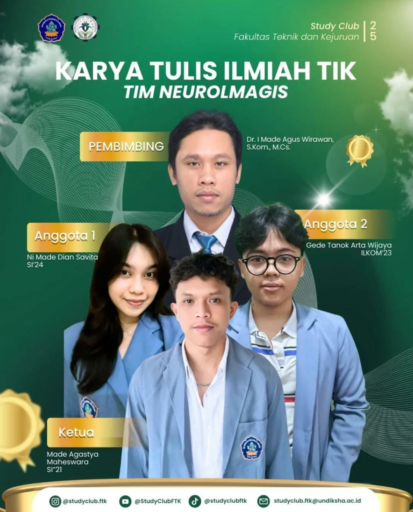
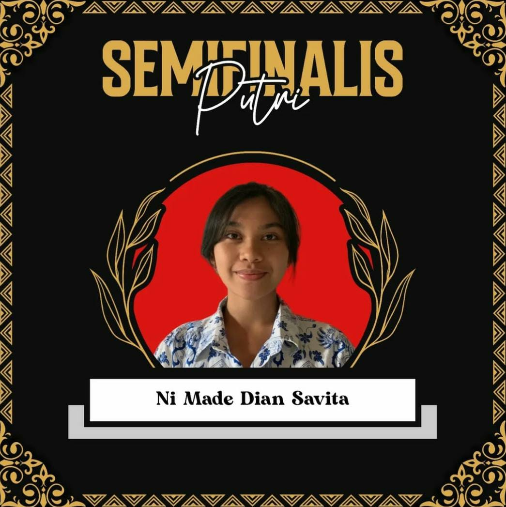

Home
Dian Savita
Home
Certifications
Achievements
Organizations
Achievements
Beberapa pencapaian dan penghargaan yang pernah saya raih selama perjalanan akademik.

Lolos sebagai finalis GEMASTIK 2025

Lolos sebagai Semifinalis Duta Genre Kabupaten Karangasem 2023 SMA